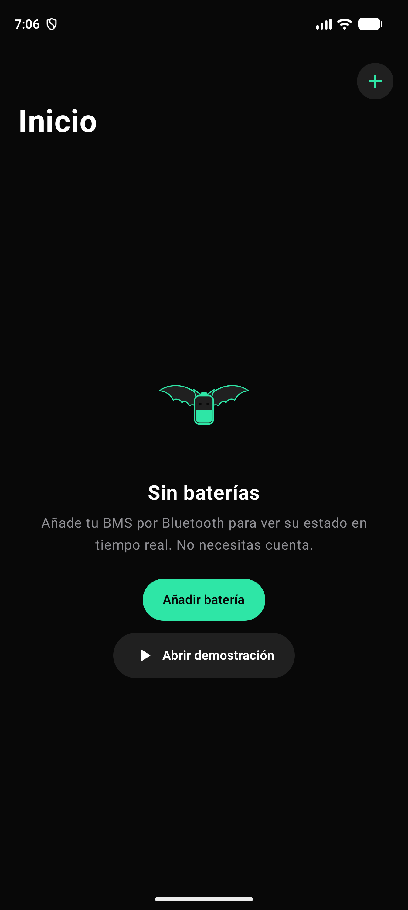
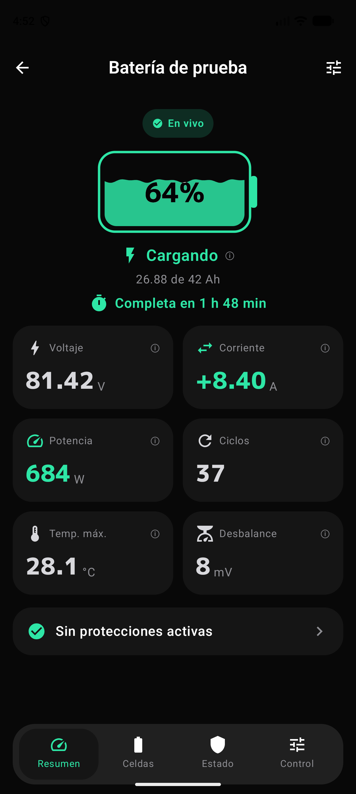
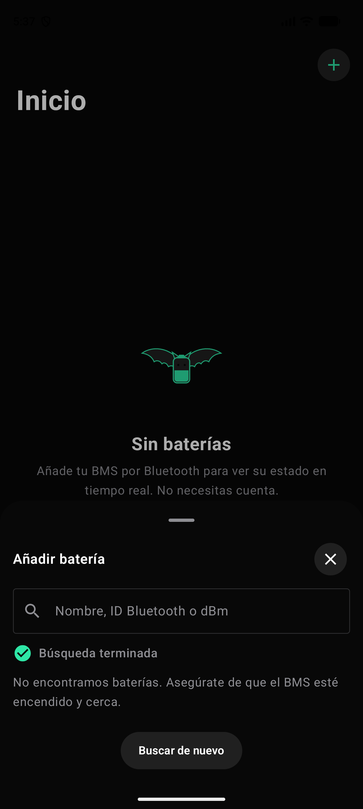
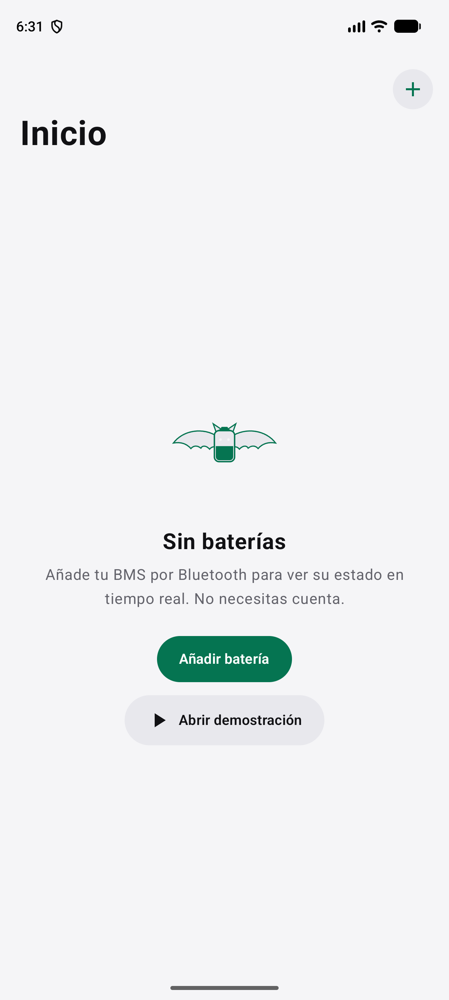
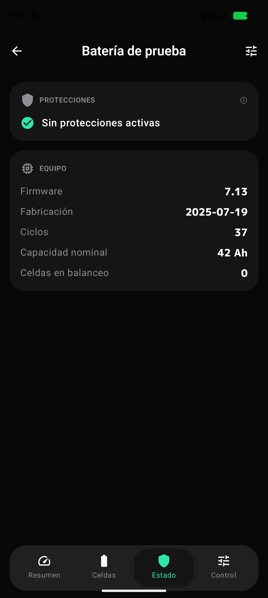

v1.0
Versión 1.0 código 1
Novedades
Versión inicial: lectura BLE, 24 celdas, temas claro y oscuro.
Datos de la versión incluidos en esta página.
Android · aplicación nativa
Lectura de tu BMS XiaoXiang por Bluetooth LE. Directo, en tiempo real y sin cuenta.
Capturas
Pantallas reales de BatMonitor en Android, en tema oscuro y claro. Las cifras son de la batería de demostración.





Funciones
Sin intermediarios: la app habla con el BMS por Bluetooth y pinta lo que responde.
Se conecta al BMS XiaoXiang por BLE y se reconecta solo si el enlace se cae. Sin nube, sin servidores de paso.
Ni registro, ni correo, ni anuncios. Abres la app, buscas la batería y lees. Tus datos se quedan en el móvil.
Voltaje de cada celda en milivoltios, con su barra y el desbalance del pack calculado al vuelo.
Sobrevoltaje, subtensión, temperatura y corriente. Si hay una protección activa, la ves en el resumen y en Estado.
Celdas en balanceo y desbalance en mV. Ideal para detectar un pack que empieza a desequilibrarse.
Sigue el tema del sistema. El oscuro es el original y el claro mantiene las cifras legibles al sol.
Actualizaciones
Esta sección se rellena con el fichero de versiones de la app
(api/version.json).
Versión 1.0 código 1
Versión inicial: lectura BLE, 24 celdas, temas claro y oscuro.
Datos de la versión incluidos en esta página.